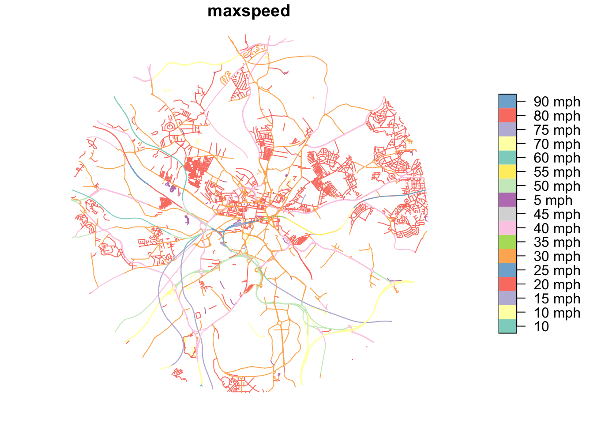
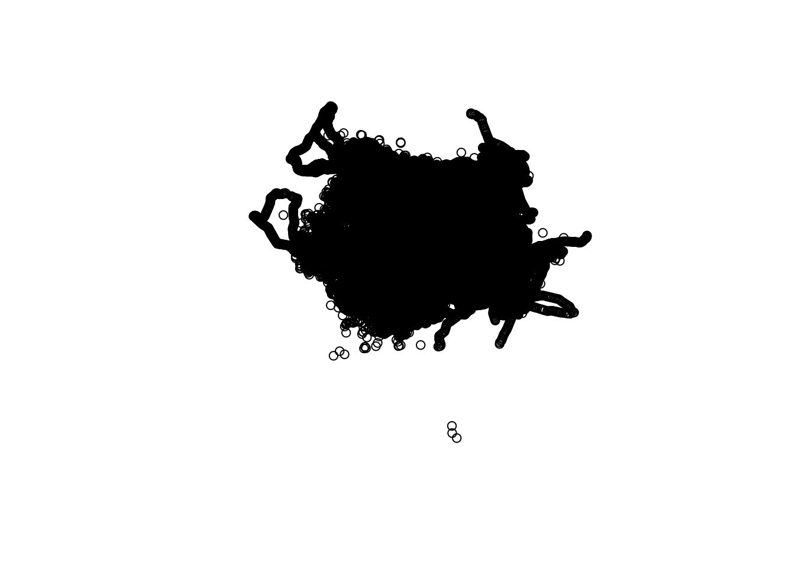

options(repos = c(CRAN = "https://cloud.r-project.org"))
if (!require("pak")) install.packages("pak")
pkgs = c(
"sf",
"tidyverse",
"osmextract",
"tmap",
"maptiles",
"stats19",
"pct"
)
pak::pak(pkgs)Finding, importing and cleaning transport datasets
Introduction
This session explores how to find, download, import, and clean transport-related datasets. Transport data comes from various sources such as government agencies, open data portals, and crowd-sourced platforms. We will learn practical techniques using R to access and prepare this data for analysis.
This session covers:
- Downloading datasets from OpenStreetMap
- Importing data into R
- Basic data cleaning and exploration
- Hands-on exercises
The first part of this is directly adapted from the information from Robin. The exercises are all my own work!
Prerequisites
Before starting, ensure you have the necessary packages installed:
library(tidyverse)
zones = zonebuilder::zb_zone("Leeds", n_circles = 3)
study_area = zones |>
sf::st_union()
extra_tags = c(
"maxspeed",
"lit",
"cycleway"
)
osm_network = osmextract::oe_get(
place = "Leeds, UK",
boundary = study_area,
boundary_type = "clipsrc",
extra_tags = extra_tags
)osm_network |>
select(maxspeed) |>
plot()
sf::write_sf(study_area, "leeds_study_area.geojson")Warning in CPL_write_ogr(obj, dsn, layer, driver,
as.character(dataset_options), : GDAL Error 6: DeleteLayer() not supported by
this dataset.Downloading transport datasets
OpenStreetMap Data
OpenStreetMap (OSM) provides global geographic data with a focus on human-made entities, including roads. It is therefore very useful for quickly obtaining road network data for transport analysis. A disadvantage of OSM data is that it can be inconsistent in quality and coverage, depending on the area, but for many applications these disadvantages are outweighed by the ease of access and free availability of the data.
The osmextract package allows you to download and extract specific features.
Below is code to download the cycleways in North Yorkshire and creating a map showing them- edited from the original West Yorkshire.
‘lit’ means if there are street lighting and the ‘maxspeed’ is the speed limit. It can be used for plotting on the map.
library(osmextract)
library(sf)
# Download cycleways in West Yorkshire
north_yorkshire_cycleways = oe_get(
# force_download = TRUE,
place = "North Yorkshire",
extra_tags = c("maxspeed", "lit", "cycleway"),
query = "SELECT * FROM lines WHERE highway IN ('cycleway', 'path')" #SQL syntax for identifying data
)
plot(st_geometry(north_yorkshire_cycleways))We can also download other spatial data. E.g. the code below downloads amenities.
The “#| eval: false” line tells quarto to show the code but not evaluate it when rendering the document, as we don’t need amenities for this project.
library(osmextract)
library(sf)
# Download amenities in West Yorkshire
west_yorkshire_amenities = oe_get(
layer = "points", #We want the point location
place = "West Yorkshire",
extra_tags = c("amenity")
)plot(st_geometry(west_yorkshire_amenities))
Below is some additional code using dplyr that can be used to get a table showing how many of each amenity there are, e.g. 66 banks and 376 atms.
Road Traffic Casualty Data (STATS19)
Data on colliosions, casualties and vehicles from the DfT.
Edited to use 2022 data.
library(stats19)
# Download 2022 collision data
collisions = get_stats19(year = 2022, type = "collision")
# Download casualty data
casualties = get_stats19(year = 2022, type = "cas")
# Download vehicle data
vehicles = get_stats19(year = 2022, type = "veh")Origin-Destination Data
The ‘pct’ package provides access to the Propensity to Cycle Tool data, which includes origin-destination flows.
Below downloads desire lines (of cycling) for Manchester. Print the local authorities to ensure that manchester was correctly identified.
library(pct)
# Downloads desire lines for Manchester
manchester_desire_lines = get_pct_lines(region = "greater-manchester")
print(unique(manchester_desire_lines$lad_name1)) [1] "Bolton" "Bury" "Manchester"
[4] "Oldham" "Rochdale" "Salford"
[7] "Stockport" "Tameside" "Trafford"
[10] "Wigan" "Warrington" "Blackburn with Darwen"
[13] "Cheshire East" "High Peak" "Chorley"
[16] "Rossendale" Boundary and Census Data
Geographic boundaries and census data can be downloaded directly from the ONS Geoportal or custom dataset tool.
Load the data directly from https://geoportal.statistics.gov.uk/ as follows.
library(sf)
# Download LSOA boundaries
url = "https://services1.arcgis.com/ESMARspQHYMw9BZ9/arcgis/rest/services/Lower_layer_Super_Output_Areas_December_2021_Boundaries_EW_BFE_V10/FeatureServer/0/query?outFields=*&where=1%3D1&f=geojson"
lsoa_boundaries = st_read(url)The above has been taking a long time. Instead you can load the data directly from https://geoportal.statistics.gov.uk/. This allows you to download the geojsns from the open geography portal as I have done previously.
All results from the census can be obtained from nomis. It is possible to obtain the data programmatically in R using nomisr.
Cleaning Data
Once downloaded, data often needs cleaning for missing values, inconsistent formates and inconsistent coordinate systems.
Basic Cleaning Example
# Clean collision data
collisions_clean = collisions |>
# Remove rows with missing st_coordinates
drop_na(location_easting_osgr, location_northing_osgr) |>
# Convert to sf object (spatial)
st_as_sf(coords = c("location_easting_osgr", "location_northing_osgr"), crs = 27700 ) |> #crs identifies map for the UK
# Select relevant columns
select(accident_index, date, speed_limit, accident_severity)Handling Missing Data
There is no single strategy for dealing with missing data. The approach you adopt depends on the context. A simple strategy to impute missing data is to use a constant value. The following example uses the median value to fill missing speed limits, which might be a valid approach if your dataset contains very similar road types.
library(osmextract)
# Check for missing values
summary(collisions_clean) accident_index date speed_limit accident_severity
Length:105982 Min. :2022-01-01 Length:105982 Length:105982
Class :character 1st Qu.:2022-04-04 Class :character Class :character
Mode :character Median :2022-07-04 Mode :character Mode :character
Mean :2022-07-03
3rd Qu.:2022-10-03
Max. :2022-12-31
geometry
POINT :105982
epsg:27700 : 0
+proj=tmer...: 0
# Impute or remove missing values
collisions_clean = collisions_clean |>
mutate(speed_limit = ifelse(is.na(speed_limit), median(speed_limit, na.rm = TRUE), speed_limit))Exercises
My answers to the exercises based on work above!
Download and Explore STATS19 Data
- Download road traffic collision data for 2019 using the stats19 package.
library(stats19)
collisions19 = get_stats19(year = 2019, type = "collision"
)Files identified: dft-road-casualty-statistics-collision-2019.csv https://data.dft.gov.uk/road-accidents-safety-data/dft-road-casualty-statistics-collision-2019.csvData saved at /var/folders/g5/tzxh_kjx6tq7lqcgzp9mf4qm0000gn/T//Rtmpvh4OWb/dft-road-casualty-statistics-collision-2019.csvReading in: /var/folders/g5/tzxh_kjx6tq7lqcgzp9mf4qm0000gn/T//Rtmpvh4OWb/dft-road-casualty-statistics-collision-2019.csvdate and time columns present, creating formatted datetime column- Explore the structure of the data using ‘str()’ and ‘summary()’
str(collisions19)spc_tbl_ [117,536 × 38] (S3: spec_tbl_df/tbl_df/tbl/data.frame)
$ accident_index : chr [1:117536] "2019010128300" "2019010152270" "2019010155191" "2019010155192" ...
$ accident_year : int [1:117536] 2019 2019 2019 2019 2019 2019 2019 2019 2019 2019 ...
$ accident_reference : chr [1:117536] "010128300" "010152270" "010155191" "010155192" ...
$ location_easting_osgr : int [1:117536] 528218 530219 530222 525531 524920 540188 532424 532773 548535 522267 ...
$ location_northing_osgr : int [1:117536] 180407 172463 182543 184605 184004 185266 164886 178460 188113 168185 ...
$ longitude : int [1:117536] NA NA NA NA NA NA NA NA NA NA ...
$ latitude : int [1:117536] NA NA NA NA NA NA NA NA NA NA ...
$ police_force : chr [1:117536] "Metropolitan Police" "Metropolitan Police" "Metropolitan Police" "Metropolitan Police" ...
$ accident_severity : chr [1:117536] "Slight" "Slight" "Slight" "Serious" ...
$ number_of_vehicles : chr [1:117536] "2" "2" "2" "1" ...
$ number_of_casualties : chr [1:117536] "3" "1" "1" "1" ...
$ date : Date[1:117536], format: "2019-02-18" "2019-01-15" ...
$ day_of_week : chr [1:117536] "Monday" "Tuesday" "Tuesday" "Tuesday" ...
$ time : chr [1:117536] "17:50" "21:45" "01:50" "01:20" ...
$ local_authority_district : chr [1:117536] "Westminster" "Lambeth" "Camden" "Camden" ...
$ local_authority_ons_district : chr [1:117536] "Westminster" "Lambeth" "Camden" "Camden" ...
$ local_authority_highway : chr [1:117536] "Westminster" "Lambeth" "Camden" "Camden" ...
$ first_road_class : chr [1:117536] "A" "A" "B" "B" ...
$ first_road_number : chr [1:117536] "4202" "23" "504" "510" ...
$ road_type : chr [1:117536] "Roundabout" "One way street" "Single carriageway" "Single carriageway" ...
$ speed_limit : chr [1:117536] "30" "30" "30" "20" ...
$ junction_detail : chr [1:117536] "Roundabout" "Not at junction or within 20 metres" "T or staggered junction" "T or staggered junction" ...
$ junction_control : chr [1:117536] "Auto traffic signal" "Data missing or out of range" "Give way or uncontrolled" "Give way or uncontrolled" ...
$ second_road_class : chr [1:117536] "A" "Not at junction or within 20 metres" "Unclassified" "B" ...
$ second_road_number : chr [1:117536] "4202" "Unknown" "first_road_class is C or Unclassified. These roads do not have official numbers so recorded as zero" "510" ...
$ pedestrian_crossing_human_control : chr [1:117536] "None within 50 metres" "unknown (self reported)" "None within 50 metres" "None within 50 metres" ...
$ pedestrian_crossing_physical_facilities : chr [1:117536] "Pedestrian phase at traffic signal junction" "unknown (self reported)" "No physical crossing facilities within 50 metres" "No physical crossing facilities within 50 metres" ...
$ light_conditions : chr [1:117536] "Daylight" "Darkness - lights lit" "Darkness - lights lit" "Darkness - lights lit" ...
$ weather_conditions : chr [1:117536] "Fine no high winds" "Fine no high winds" "Fine no high winds" "Fine no high winds" ...
$ road_surface_conditions : chr [1:117536] "Dry" "Dry" "Dry" "Dry" ...
$ special_conditions_at_site : chr [1:117536] "None" "None" "None" "None" ...
$ carriageway_hazards : chr [1:117536] "None" "None" "None" "None" ...
$ urban_or_rural_area : chr [1:117536] "Urban" "Urban" "Urban" "Urban" ...
$ did_police_officer_attend_scene_of_accident: chr [1:117536] "No - accident was reported using a self completion form (self rep only)" "No - accident was reported using a self completion form (self rep only)" "Yes" "Yes" ...
$ trunk_road_flag : chr [1:117536] "Non-trunk" "Non-trunk" "Non-trunk" "Non-trunk" ...
$ lsoa_of_accident_location : chr [1:117536] "E01004762" "E01003117" "E01000943" "E01000973" ...
$ enhanced_severity_collision : num [1:117536] -1 -1 -1 -1 -1 -1 -1 -1 -1 -1 ...
$ datetime : POSIXct[1:117536], format: "2019-02-18 17:50:00" "2019-01-15 21:45:00" ...
- attr(*, "spec")=
.. cols(
.. accident_index = col_character(),
.. accident_year = col_integer(),
.. accident_reference = col_character(),
.. location_easting_osgr = col_integer(),
.. location_northing_osgr = col_integer(),
.. longitude = col_integer(),
.. latitude = col_integer(),
.. police_force = col_character(),
.. accident_severity = col_character(),
.. number_of_vehicles = col_character(),
.. number_of_casualties = col_character(),
.. date = col_character(),
.. day_of_week = col_character(),
.. time = col_character(),
.. local_authority_district = col_character(),
.. local_authority_ons_district = col_character(),
.. local_authority_highway = col_character(),
.. first_road_class = col_character(),
.. first_road_number = col_character(),
.. road_type = col_character(),
.. speed_limit = col_character(),
.. junction_detail = col_character(),
.. junction_control = col_character(),
.. second_road_class = col_character(),
.. second_road_number = col_character(),
.. pedestrian_crossing_human_control = col_character(),
.. pedestrian_crossing_physical_facilities = col_character(),
.. light_conditions = col_character(),
.. weather_conditions = col_character(),
.. road_surface_conditions = col_character(),
.. special_conditions_at_site = col_character(),
.. carriageway_hazards = col_character(),
.. urban_or_rural_area = col_character(),
.. did_police_officer_attend_scene_of_accident = col_character(),
.. trunk_road_flag = col_character(),
.. lsoa_of_accident_location = col_character(),
.. enhanced_severity_collision = col_double()
.. )
- attr(*, "problems")=<externalptr> summary(collisions19) accident_index accident_year accident_reference location_easting_osgr
Length:117536 Min. :2019 Length:117536 Min. : 64084
Class :character 1st Qu.:2019 Class :character 1st Qu.:388018
Mode :character Median :2019 Mode :character Median :459396
Mean :2019 Mean :452403
3rd Qu.:2019 3rd Qu.:529373
Max. :2019 Max. :655244
NA's :28
location_northing_osgr longitude latitude police_force
Min. : 10814 Min. : NA Min. : NA Length:117536
1st Qu.: 175526 1st Qu.: NA 1st Qu.: NA Class :character
Median : 218465 Median : NA Median : NA Mode :character
Mean : 278686 Mean :NaN Mean :NaN
3rd Qu.: 384804 3rd Qu.: NA 3rd Qu.: NA
Max. :1167366 Max. : NA Max. : NA
NA's :28 NA's :117536 NA's :117536
accident_severity number_of_vehicles number_of_casualties
Length:117536 Length:117536 Length:117536
Class :character Class :character Class :character
Mode :character Mode :character Mode :character
date day_of_week time
Min. :2019-01-01 Length:117536 Length:117536
1st Qu.:2019-04-06 Class :character Class :character
Median :2019-07-08 Mode :character Mode :character
Mean :2019-07-06
3rd Qu.:2019-10-06
Max. :2019-12-31
local_authority_district local_authority_ons_district local_authority_highway
Length:117536 Length:117536 Length:117536
Class :character Class :character Class :character
Mode :character Mode :character Mode :character
first_road_class first_road_number road_type speed_limit
Length:117536 Length:117536 Length:117536 Length:117536
Class :character Class :character Class :character Class :character
Mode :character Mode :character Mode :character Mode :character
junction_detail junction_control second_road_class second_road_number
Length:117536 Length:117536 Length:117536 Length:117536
Class :character Class :character Class :character Class :character
Mode :character Mode :character Mode :character Mode :character
pedestrian_crossing_human_control pedestrian_crossing_physical_facilities
Length:117536 Length:117536
Class :character Class :character
Mode :character Mode :character
light_conditions weather_conditions road_surface_conditions
Length:117536 Length:117536 Length:117536
Class :character Class :character Class :character
Mode :character Mode :character Mode :character
special_conditions_at_site carriageway_hazards urban_or_rural_area
Length:117536 Length:117536 Length:117536
Class :character Class :character Class :character
Mode :character Mode :character Mode :character
did_police_officer_attend_scene_of_accident trunk_road_flag
Length:117536 Length:117536
Class :character Class :character
Mode :character Mode :character
lsoa_of_accident_location enhanced_severity_collision
Length:117536 Min. :-1.000
Class :character 1st Qu.:-1.000
Mode :character Median :-1.000
Mean : 1.005
3rd Qu.: 3.000
Max. : 7.000
datetime
Min. :2019-01-01 00:06:00.00
1st Qu.:2019-04-06 10:17:15.00
Median :2019-07-08 09:44:00.00
Mean :2019-07-06 16:33:59.33
3rd Qu.:2019-10-06 00:02:30.00
Max. :2019-12-31 23:53:00.00